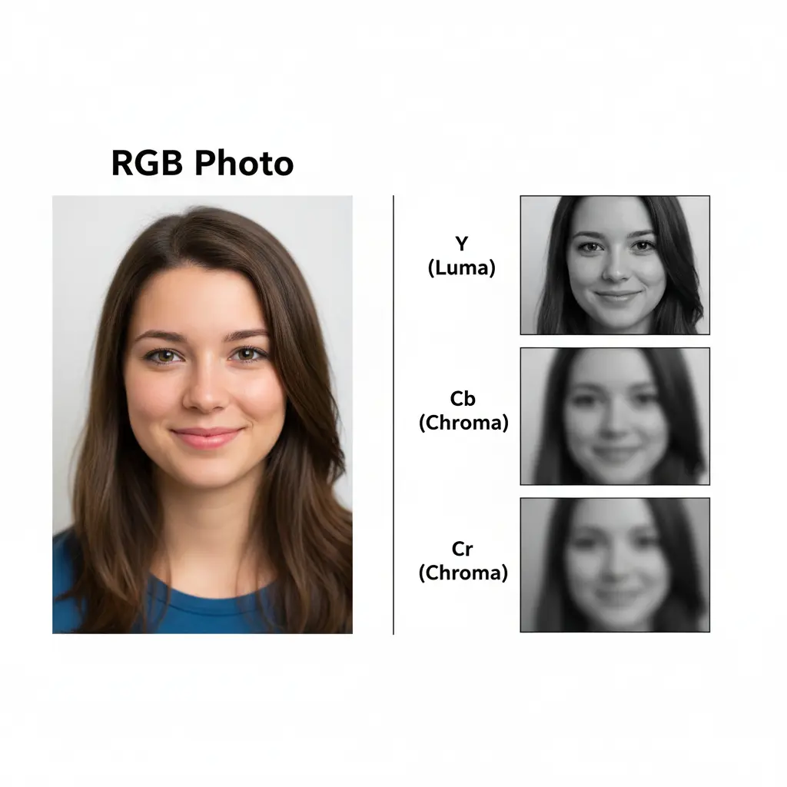
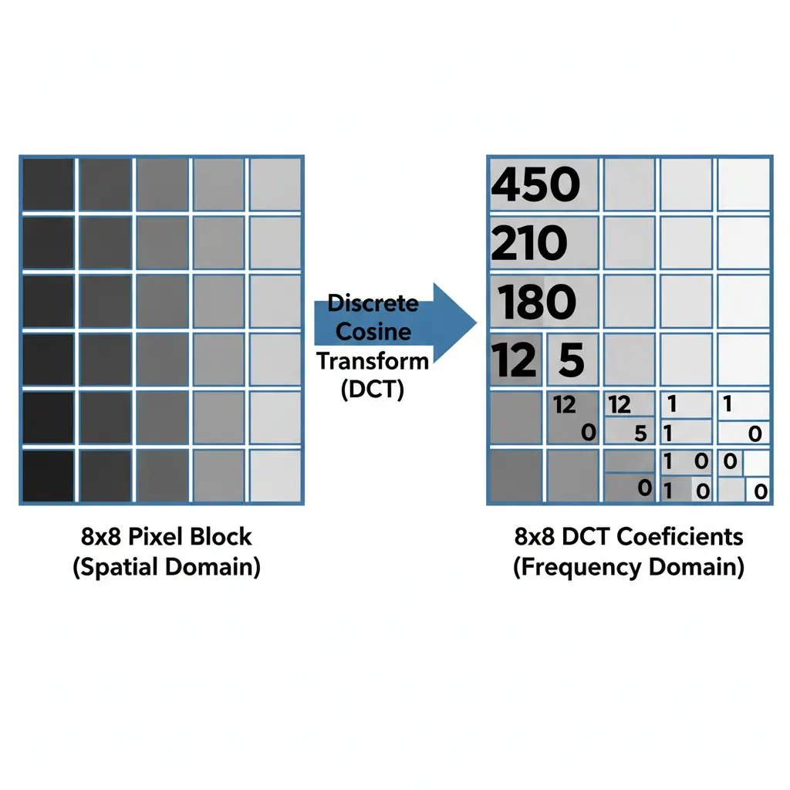
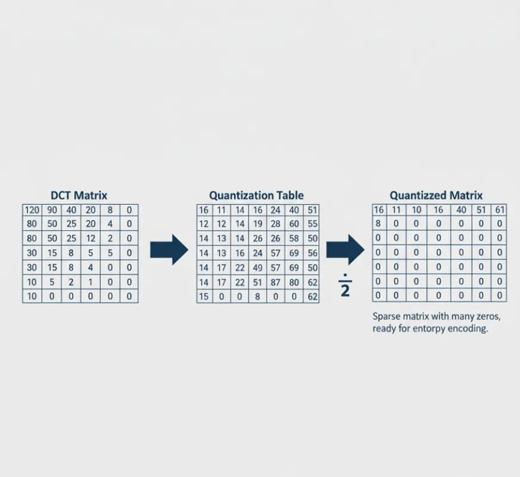
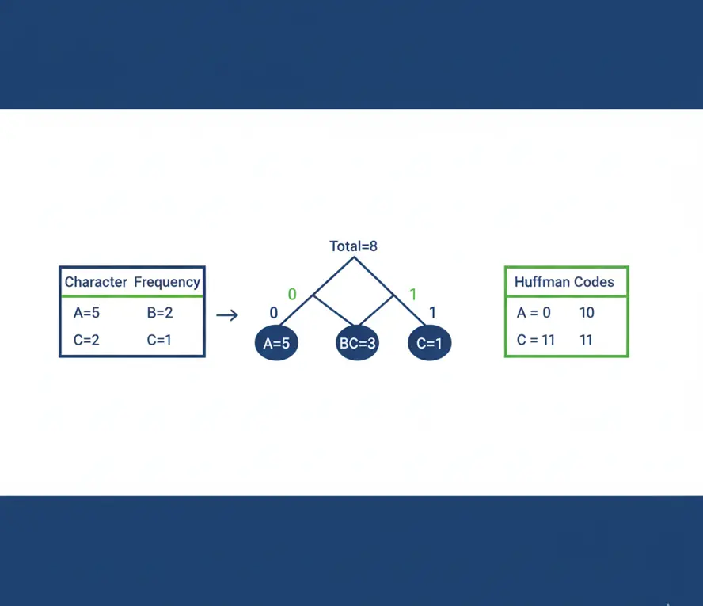

شرح خوارزمية ضغط JPEG
رحلة تفصيلية من البيكسل إلى الملف المضغوط
الخطوات الأربع الأساسية
في هذا الشرح سنتناول الجانب العملي من ضغط الصور الرقمية،
وهو أحد المفاهيم الأساسية في مقرر نظم الوسائط المتعددة،
من خلال تحليل المراحل الأربع التي تمر بها خوارزمية JPEG.
الخطوة الأولى: تحويل فضاء الألوان (Color Space Transformation)
الخطوة الأولى هي تحويل بيانات الصورة من نموذج اللون المعتاد RGB (أحمر، أخضر، أزرق)
إلى نموذج YCbCr. هذا النموذج يفصل
شدة الإضاءة (Y)
عن
معلومات اللون (Cb و Cr).
العين البشرية أكثر حساسية للتغير في الإضاءة منها للّون،
وهذا الفصل يسمح لنا بضغط معلومات اللون بشكل أكبر لاحقًا دون أن نلاحظ فرقًا كبيرًا.

الخطوة الثانية: تحويل جيب التمام المتقطع (DCT)
بعد فصل الألوان، يتم تقسيم كل مكون (Y, Cb, Cr) إلى مربعات صغيرة بحجم 8×8 بيكسل.
يتم تطبيق معادلة رياضية معقدة تسمى DCT على كل مربع.
هذه المعادلة لا تغيّر البيكسلات نفسها، بل تحولها من تمثيل مكاني (قيم بيكسلات)
إلى تمثيل ترددي (frequencies)، حيث يتم تجميع معظم "الطاقة" البصرية للمربع
في الزاوية العلوية اليسرى.

الخطوة الثالثة: التكميم (Quantization)
هذه هي الخطوة الأساسية التي يحدث فيها الضغط الفعلي وفقدان البيانات (Lossy).
يتم قسمة قيم الترددات الناتجة من DCT على قيم موجودة في ما يسمى جدول التكميم.
الترددات العالية (التي تمثل التفاصيل الدقيقة التي لا تلاحظها العين)
يتم قسمتها على أرقام كبيرة، مما يجعل ناتجها صفراً أو رقماً صغيراً جداً.
هكذا يتم التخلص من التفاصيل غير المهمة وتقليل حجم البيانات بشكل هائل.

الخطوة الرابعة: الترميز (Entropy Coding)
في الخطوة الأخيرة، يتم أخذ البيانات المضغوطة من الخطوة السابقة وتنظيمها بشكل أكثر كفاءة
باستخدام خوارزميات ضغط بدون فقدان (Lossless)
مثل ترميز هوفمان (Huffman Coding).
هذه العملية تشبه تحويل جملة طويلة ومتكررة إلى اختصارات،
مما يقلل الحجم النهائي للملف دون ضياع أي بيانات إضافية.
